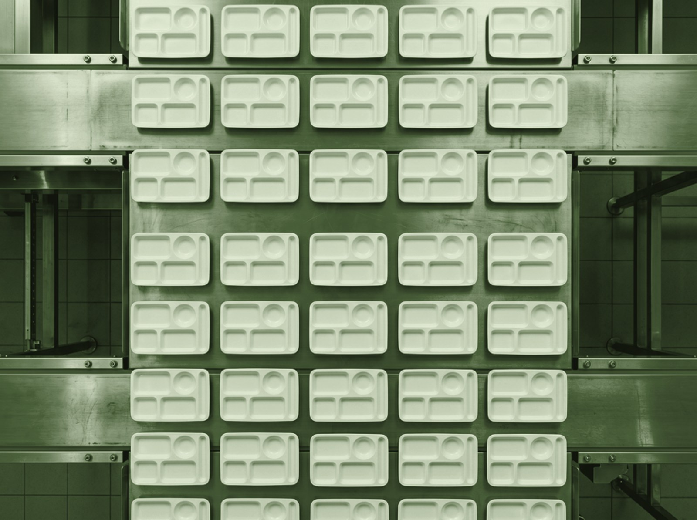

다회용기 풀 패키지 대여
식기·용기를 구매하지 않아도 됩니다. 운영 규모에 맞춰 필요한 품목·수량을 맞춤 구성해 공급합니다.
- 식판·컵·용기·수저 풀셋 대여
- 파손·분실 대응 여유분 상시 운용
- 초도 셋업 — 현장 환경 진단 후 설계
단체급식 현장에 필요한 것만. 식기 대여부터 정기 순환 운영, 위생 성과 데이터까지 하나의 계약으로 묶었습니다.
식기·용기를 구매하지 않아도 됩니다. 운영 규모에 맞춰 필요한 품목·수량을 맞춤 구성해 공급합니다.
사용을 마친 식기를 정해진 주기로 수거해 자동 세척·살균 후 현장으로 돌려드립니다. 현장은 설거지에서 완전히 해방됩니다.
ATP 위생검사 수치를 정기 리포트로 제공합니다. 단체급식 위생 기준 대응은 물론, 고객사의 ESG 보고에 활용 가능한 탄소저감 실적 데이터를 포함합니다.

일일 22,800식 세척 처리 능력일회용기를 없애는 것은 시작일 뿐입니다. RE:able 기업·단체는 비용 구조를 바꾸고, 위생 리스크를 줄이며, 현장 운영 부담을 아웃소싱합니다.
매월 반복되는 일회용 식기 구매비와 폐기물 처리 비용이 사라집니다.
일회용 대비 탄소 93.7% 저감. 측정 가능한 환경 성과를 ESG 보고서에 직접 활용할 수 있습니다.
ATP 수치를 수치로 확인합니다. "깨끗하다는 느낌"이 아니라 검증된 데이터로 위생 관리 책임을 뒷받침합니다.
수거·세척·재공급의 전 과정을 RE:able이 맡습니다. 급식 담당자는 본연의 업무에 집중할 수 있습니다.
단체급식 현장의 규모에 맞춰 대응합니다. 7년간 쌓인 운영 데이터와 설비가 안정성을 담보합니다.
 2세대 설비 기준 · 탄소 93.7% 저감
2세대 설비 기준 · 탄소 93.7% 저감
일회용기에서 다회용기로 전환할 때 줄어드는 탄소 배출량은 측정 가능합니다. 고객사는 이 수치를 그대로 ESG 보고서와 탄소중립 활동에 활용할 수 있습니다.
연 120만 개 일회용기를 다회용으로 전환 시 탄소 배출 54.24t → 약 3.4t/년으로 감소합니다.
탄소저감량·플라스틱 폐기물 절감량을 정기 리포트 형태로 제공합니다. 별도 산정 작업이 필요 없습니다.
복잡한 절차 없이 진행합니다. 현장 진단에서 정기 운영, 데이터 리포트까지 RE:able이 전 과정을 안내합니다.
운영 규모, 메뉴 구성, 현장 환경을 파악해 적합한 식기 품목·수량·수거 주기를 설계합니다. 요금은 규모에 따른 맞춤 견적으로 안내드립니다.
초도 식기 납품 및 현장 수거 동선을 확정합니다. 현장 담당자와 함께 운영 방식을 세팅해 바로 사용할 수 있도록 합니다.
합의된 주기로 사용 식기를 수거하고, 자동 세척·살균 후 재공급합니다. 현장은 별도 관리 없이 순환을 이어갑니다.
위생 검사 결과(ATP 수치)와 탄소저감 실적을 정기적으로 보고합니다. ESG 담당자가 바로 활용할 수 있는 형태로 제공합니다.
"일회용을 다회용으로 바꾸면서 폐기물 비용이 줄고, ESG 보고서에도 쓸 수 있는 숫자가 생겼습니다. 위생 수치를 정기적으로 받아보니 내부 보고도 훨씬 편해졌어요."
운영 규모와 현장 환경에 맞춰 맞춤 견적을 안내해 드립니다. 확인이 필요한 사항은 메일로 남겨주시면 영업일 기준 1일 이내에 회신드립니다.